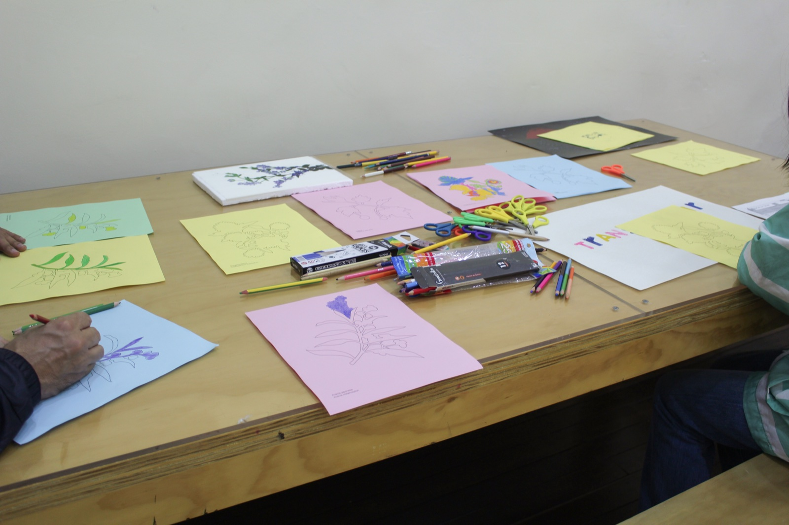
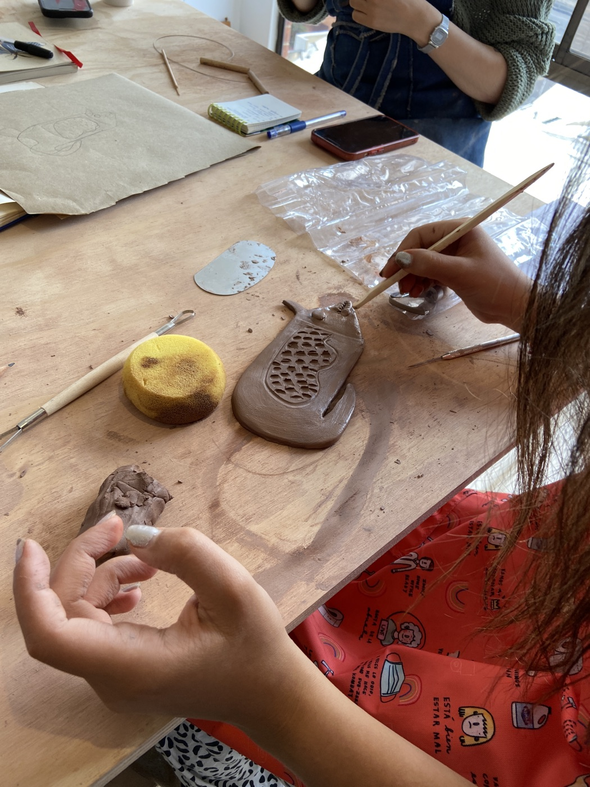

menú
sofía lozano ávila
artworks
workshops
prótesis
antejardín
todo lo que no cabe en una vitrina
shop
bache
superficies de paso
doblar una flor
vasija/ver/vaciar
procedimiento fértil
de dudosa procedencia
semi preciosas
revisitar
inventario sobre lo que no veo
señales
nada de lo que se mide es basura
la línea no es recta
dejar que la forma se haga
cuerpo residual
otros proyectos
CV
contact
ES
+
workshops
superficies de paso
2026

doblar una flor
2025

vasija / ver / vaciar
2024